CarWise Powered by Capital One
A guided digital experience for first-time car buyers. I led research into financing confusion, dealership pressure, and the support buyers need to feel prepared.
Read the case study ↗I’m a UX/UI designer based in Dallas, Texas. I bring research, digital design, and visual storytelling together to make complex experiences easier to understand.
01 / SELECTED WORK
User research, digital experiences, and visual design.
A guided digital experience for first-time car buyers. I led research into financing confusion, dealership pressure, and the support buyers need to feel prepared.
Read the case study ↗Created social media posts and a marketing website for a nonprofit teaching children English and Urdu in Pakistan.
Worked on web and interface design for a medical software company, contributing to its digital experience.
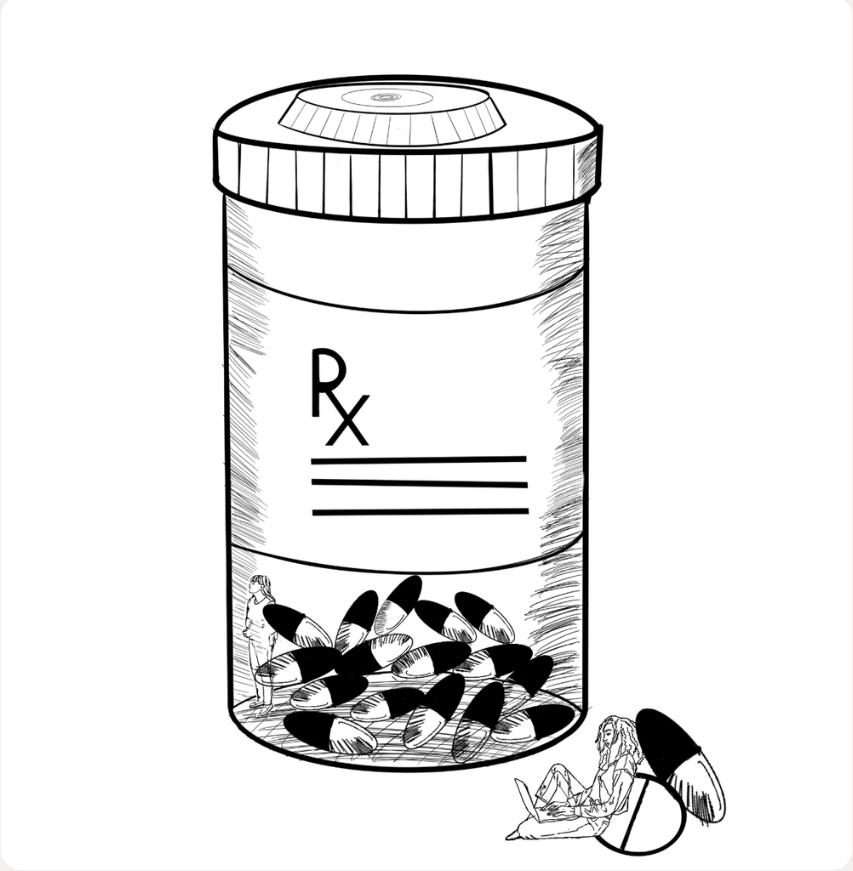
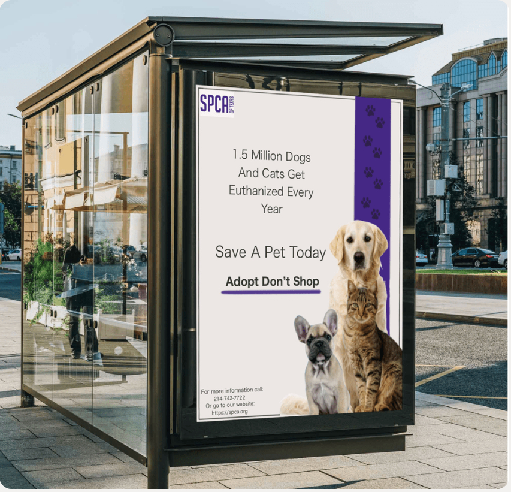
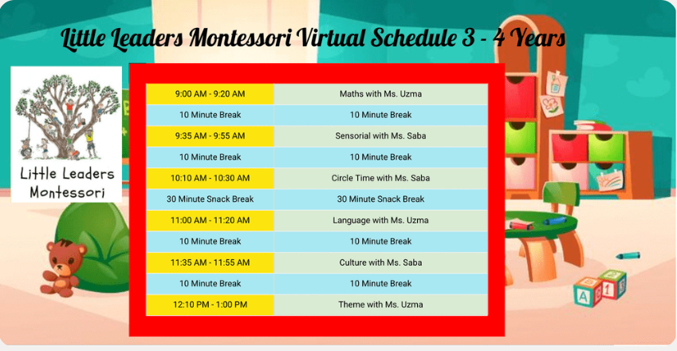
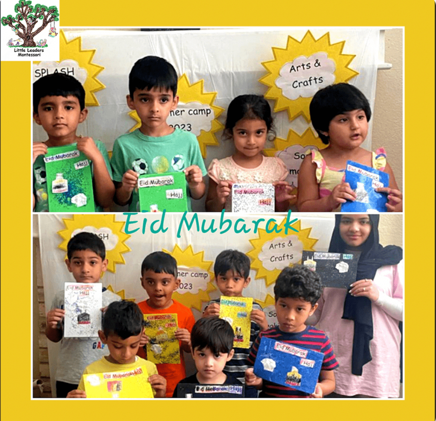
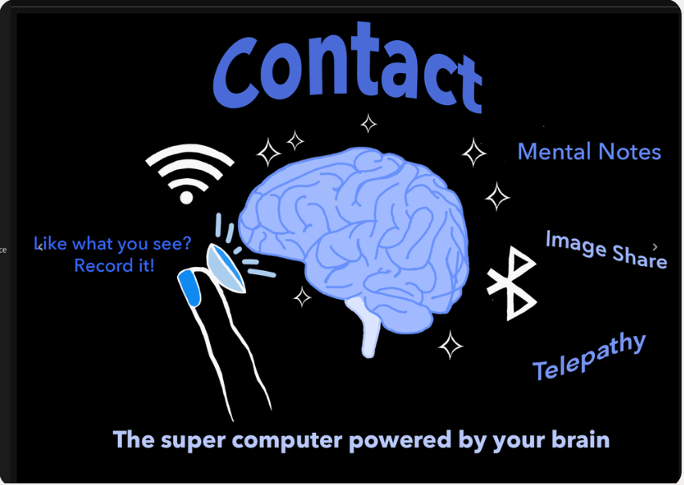
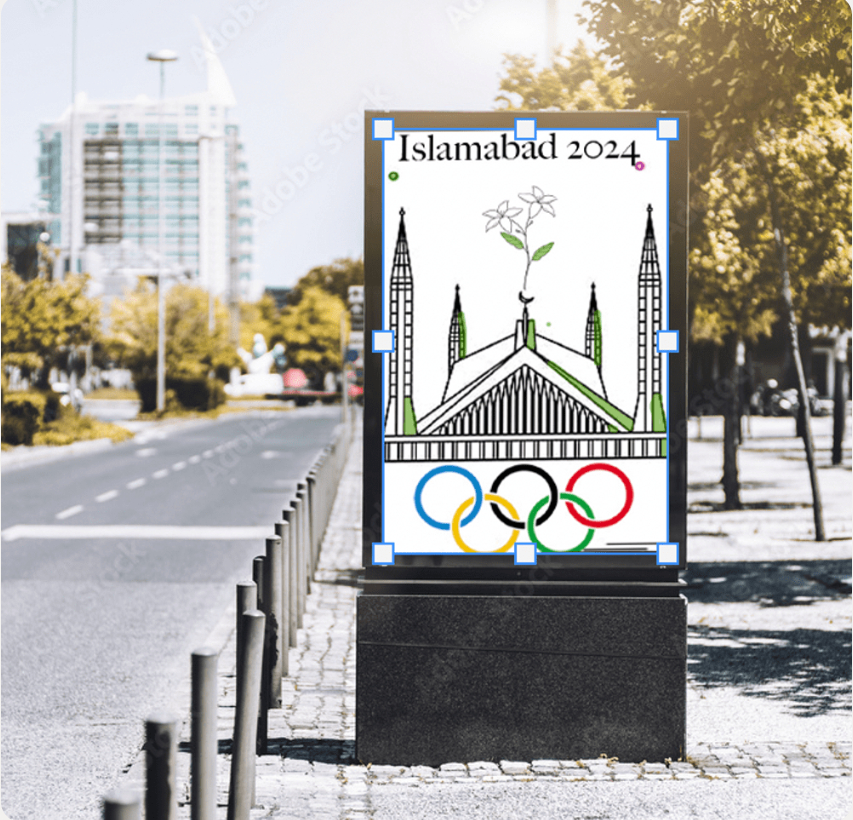
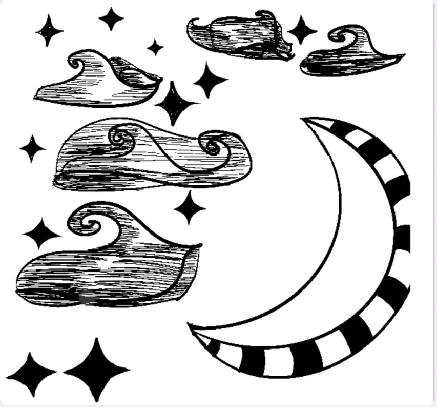
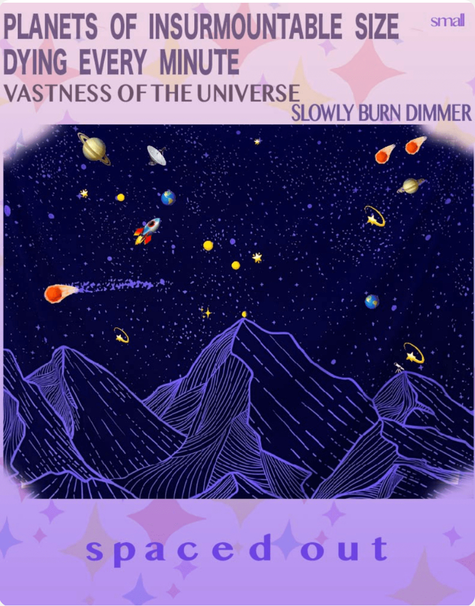
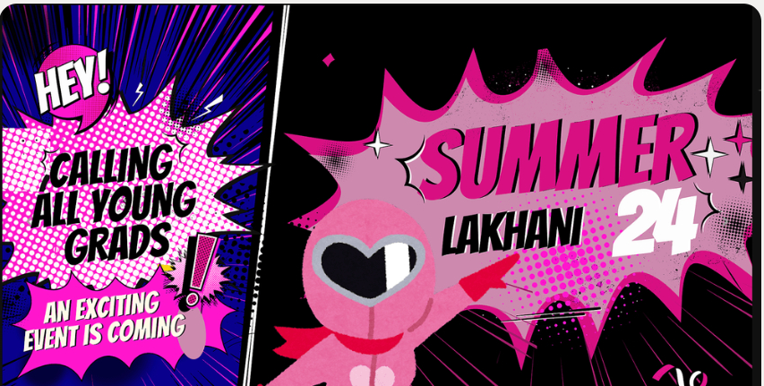
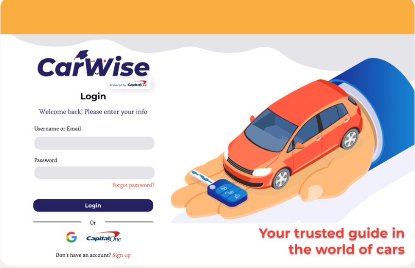
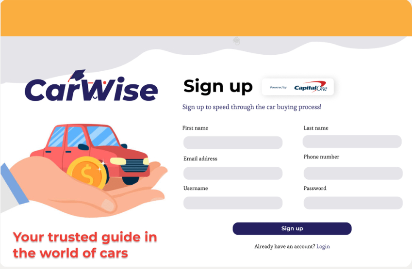
02 / EXPERIENCE
Experience across design, marketing, and education.
Thunderly Marketing · Client relationships, campaign coordination, and cross-functional delivery
Little Leaders Montessori · Social media, marketing campaigns, and promotional materials
Breaking Barriers Non-Profit · Website development, brand strategy, and social media
Practice EHR · Web and interface design
Ambridge Hospitality · Hospitality marketing, brand strategy, and customer engagement
EDUCATION
MBA, Marketing concentration
B.A., Arts, Technology, and Emerging Communications
03 / ABOUT
My work spans user research, interface design, and visual communication. From education and nonprofit marketing to healthcare software, I’ve worked on ways to communicate clearly and support the people using a product or service.
As research lead on CarWise, I explored how first-time buyers experience financing and dealership decisions. I’m continuing to build that connection between design and business through my MBA in Marketing.